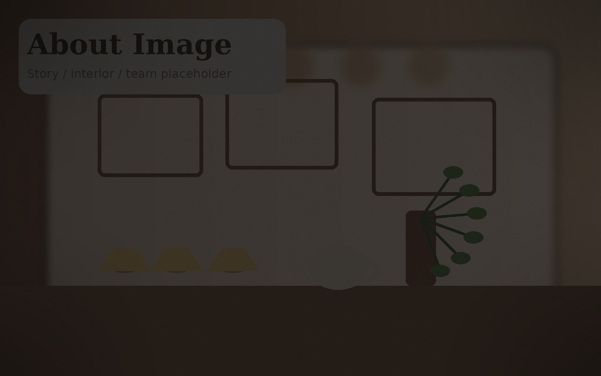

Vielseitig
Café und Treffpunkt zugleich
Nano wirkt wie ein Ort für einen spontanen Besuch genauso wie für ein längeres Zusammensitzen.
Nano Café & Bistro präsentiert sich nicht nur als klassisches Café, sondern auch als Ort für gemeinsame Zeit, Genuss und kleinere Anlässe in Basel.

Nano wirkt wie ein Ort, an dem man sich unkompliziert treffen, etwas trinken, etwas Süsses oder Kleines geniessen und auch mit mehreren Personen zusammenkommen kann.
Genau deshalb setzt der Webauftritt nicht auf leere Werbesätze, sondern auf klare Informationen, stimmige Bilder und eine Struktur, die zur tatsächlichen Wahrnehmung des Cafés passt.
Nano wirkt wie ein Ort für einen spontanen Besuch genauso wie für ein längeres Zusammensitzen.
Die vorhandenen Eindrücke zeigen klar, dass hier auch Anlässe und Gruppen Platz finden.
Der Charakter entsteht durch echte Bilder, Nähe und einen unkomplizierten Auftritt.
Warm, erreichbar, offen und mit Platz für mehr als nur einen kurzen Kaffee. Genau deshalb ist diese Website bewusst auf Eindruck, Kontakt und Atmosphäre gebaut.